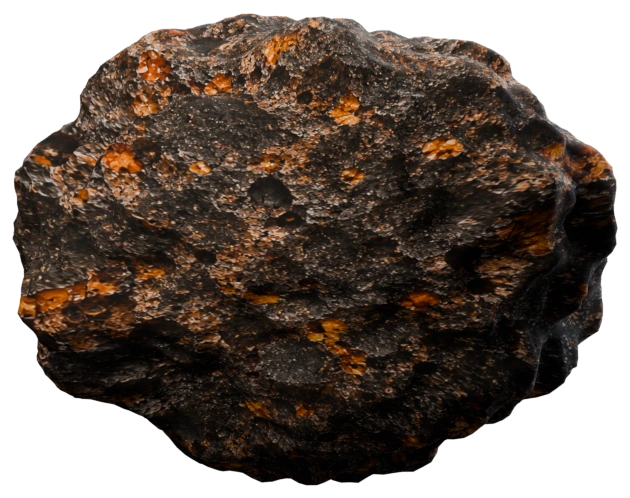

ρ 密度
g/cm³公克／立方公分
g/mL公克／毫升
kg/m³公斤／立方公尺
小葵和阿公接著記錄這顆隕石。量過不同方向的長度後，他們還想知道隕石占多少空間、有多重，並用量測資料認識它的物理特性。
隕石轉個方向，量出的長、寬、高也可能改變。不同擺向的讀值都可能正確，但不容易用一組尺寸說明隕石占多少空間。
阿公，鉛筆的長度我會量了。那我們撿到的隕石，要怎麼把資料記清楚？
我們先用尺量量看這顆隕石的長、寬、高，想想看這些數字能不能告訴我們它的體積？
改變的是量測方向，不是隕石本身。長、寬、高描述各方向的跨度；要知道隕石占多少空間，還需要量出體積。

正在準備立體模型…拖曳隕石旋轉；使用滑鼠滾輪縮放。
先從邊長容易量出的長方體開始，看看長、寬、高如何組成體積；再把這個方法和隕石的形狀比較。
長方體的長、寬、高都能量出。用單位小方塊一層層堆起來，就能看懂長 × 寬 × 高如何算出它占的空間，也就是體積。
我轉動隕石時，長、寬、高的讀值也跟著變了；這些數字能告訴我們它占多少空間嗎？
如果物體形狀規則，像長方體，就可以用長 × 寬 × 高算出體積；但隕石形狀不規則，還要找到合適的方法。
每個小方塊的邊長是 1 cm，體積是 1 cm³。
每一層厚 1 cm；底面的每個 1 cm × 1 cm 方格，疊上 1 cm 厚後就是一個 1 cm³ 小方塊。
每層有 2 × 3 = 6 個小方格；疊 4 層，共 24 個 1 cm³ 小方塊，也就是 24 cm³。
一個 1 cm × 1 cm × 1 cm 的小方塊容器，剛好可以裝 1 mL 的水。
但隕石不像長方體那樣有好量的邊長。接下來把隕石完全放進水裡，用水位上升的體積量出隕石占的空間。
長方體可以用長、寬、高計算體積；隕石形狀不規則，沒有容易量出的邊長。把隕石完全浸入水中，量出水位上升多少，就能知道它排開多少水，也就是隕石的體積。
隕石凹凸不平，用尺好像量不準它的體積。阿公，還有什麼方法可以量量看嗎？
我們先把隕石放進量筒，仔細觀察看看會發生什麼事。
拖曳隕石進入量筒，讓它完全浸入水中；也可使用下方按鈕。
隕石完全浸入後，排開水的體積就是隕石本身的體積。現在知道它占多少空間了；要繼續描述這顆隕石，還要量出它有多重。
阿公，隕石放進量筒後，水面上升了！
量出放入前後的水量差，就是隕石排開水的體積；隕石完全浸入水中時，排開水的體積也就是隕石的體積。
用天平或電子秤量出質量，並理解不同質量單位之間的換算關係。
阿公，知道隕石的體積後，要怎麼量出它的質量呢？
可以用天平或電子秤量出質量，再把測量結果和體積一起記錄下來。
天平以兩側平衡比較質量；電子秤直接顯示讀值。操作秤具時，可以觀察兩種方法如何量出同一塊隕石的質量。
日常說「這顆隕石重幾公斤」時，公斤表示的是隕石的質量。本頁用天平和電子秤測量質量。
910 g = 0.91 kg = 910,000 mg
阿公，電子秤和砝碼天平各有什麼優點和不方便的地方？
電子秤能直接顯示質量，讀值快速方便，但使用前要確認歸零，也需要電力；砝碼天平不需要電，可以用砝碼比較質量，但要調整砝碼直到平衡，操作比較花時間。
量出質量後，要比較隕石和其他材料，還要看相同體積時各自有多重。下一步先把兩種樣本的體積固定一樣，再比較質量。
先確認隕石和純金樣本占的空間一樣大，再比較它們的質量，看看相同體積裡裝著的物質有什麼不同。
阿公，同樣體積的東西，質量一定一樣嗎？
我們用體積相同的隕石和另一種樣本量量看，再比較它們的質量。
拖曳樣本進入量筒；量測後可再拖出。也可用下方按鈕操作。
| 樣本 | 質量 | 體積 |
|---|---|---|
| 隕石樣本 | 910 g | 350 cm³ |
| 純金樣本 | 約 6,755 g | 350 cm³ |
兩種樣本都占 350 cm³，純金樣本的質量卻大得多。把它們換成每 1 cm³ 來比較，純金每份的質量較大；這種「每單位體積有多少質量」的比較，就是密度。
這塊純金和隕石占的空間一樣大，質量卻不一樣。
把質量除以體積，看看每一立方公分有多少質量，就能比較它們的密度。
密度表示每一份相同體積裡有多少質量。用質量除以體積算出密度，就能把不同物質換成同一種尺度來比較，看看哪些材料的密度接近。
阿公，如果找不到體積剛好一樣的物體，要怎麼比較它們的密度呢？
把每個物體的質量除以它的體積，就能算出密度，也就是每單位體積裡有多少質量。這樣即使物體大小不同，也能比較它們的密度。
把不同物質換成同樣大小的一份，再比較每一份有多重；每一份越重，密度就越大。
阿公，隕石的密度算出來了，這樣算高還是低呢？我想查查看哪些物質的密度和它接近。
輸入質量與體積後，先看分數算出的密度；按下搜尋相近物質，再比對參照材料。
比較結果會指出哪些物質的密度接近你計算出的數值。
可以查密度資料來比較，看看哪些材料的密度接近；不過，密度接近只能提供線索，不能單靠這一點確定材料身分。
計算時會先統一換算成公克與 cm³，再以 g/cm³ 顯示密度；1 mL = 1 cm³，1 m³ = 1,000,000 cm³。
接下來改變同一種隕石的數量，看看總質量和總體積一起變大時，密度會不會改變。
調整隕石數量，觀察總體積、總質量和用密度公式算出的結果怎麼變化。
阿公，如果把更多顆相同的隕石放在一起，密度會隨著數量增加而變大或變小嗎？
隕石數量增加時，總質量和總體積會按相同比例增加；最後密度仍然會相同。
點擊圖表或拖曳橘色標記，選取隕石顆數並查看對應的總體積與總質量；也可使用下方滑桿。
每增加一顆相同隕石，總體積增加約 350 cm³，總質量增加 910 g；圖中的隕石外觀維持原樣，總體積只計算隕石本身，不含隕石間空隙。
量杯內徑約 16 cm、底面積約 201 cm²，先裝 1,300 mL 水。每顆隕石排開約 350 mL，水位約升 16.42 mm；水位變化依全部隕石計算。
圖中的隕石維持原有顯示尺寸；水位依隕石體積數值計算。
起始 1,300 mL；9,569.23 − 1,300 = 8,250 mL = 8,250 cm³
看看電子秤上的總質量，如何隨隕石數量改變。
電子秤與量杯使用相同尺寸的隕石；後排透視重疊，顆數增加時逐顆堆上秤盤。
因此，增加同一種隕石只會讓總質量和總體積一起增加，密度比值不變。密度可以用來比較材料、找出相近的參考物，但密度相近不代表一定是同一種材料。
單元小測
運用這個單元學到的量測資料，判斷兩個樣本的密度差異。
阿公，現在有兩頂待檢驗的王冠，還有一塊純金對照塊。怎麼找出哪一頂是純金？
量出它們的質量和體積，算出密度，再和純金對照塊比較。
隕石樣本和純金樣本的體積相同。先比較表中的資料，再回答問題。
| 樣本 | 質量 | 體積 |
|---|---|---|
| 隕石樣本 | 910 g | 350 cm³ |
| 純金樣本 | 約 6,755 g | 350 cm³ |
請選出最能說明資料的答案
實驗題
眼前有兩頂待檢驗的王冠，其中一頂是純金，另一頂不是。請量出兩頂王冠和純金對照塊的質量與體積，算出各自的密度，再和純金對照塊的密度比較，找出哪一頂是純金王冠。